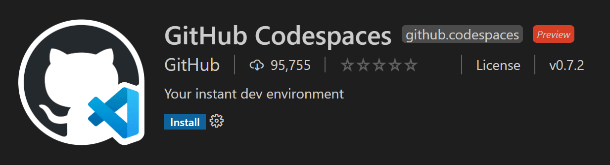
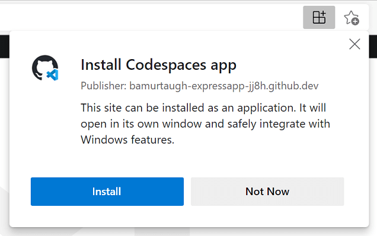
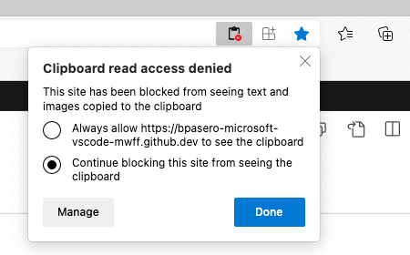
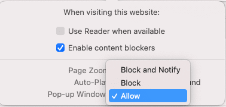

GitHub Codespaces
GitHub Codespaces provides cloud-powered development environments for any activity - whether it's a long-term project, or a short-term task like reviewing a pull request. You can work with these environments from Visual Studio Code or in a browser-based editor.

Environments
An environment is the "backend" half of GitHub Codespaces. It's where all of the compute associated with software development happens: compiling, debugging, restoring, etc. When you need to work on a new project, pick up a new task, or review a PR, you can simply spin up a Cloud-hosted environment, and GitHub Codespaces takes care of configuring it correctly. It automatically configures everything you need to work on your project: the source code, runtime, compiler, debugger, editor, custom dotfile configurations, relevant editor extensions and more.
Customization
GitHub Codespaces are fully customizable on a per project basis. This is accomplished by including a devcontainer.json file in the project's repository, similar to VS Code Dev Containers development.
Example customizations include:
- Setting the Linux-based operating system to use.
- Automatically installing various tools, runtimes, and frameworks.
- Forwarding commonly used ports.
- Setting environment variables.
- Configuring editor settings and installing preferred extensions.
See the Configuring Codespaces documentation for codespace-specific devcontainer.json settings.
Dotfile per user configuration
Dotfiles are files whose filename begins with a dot (.). They typically contain configuration information for applications and can control how terminals, editors, source control, and various other tools behave. .bashrc, .gitignore, and .editorconfig are examples of dotfiles commonly used by developers.
You can specify a GitHub repo containing your dotfiles, a target location for the files, as well as install commands when creating a codespace.
See the Personalizing Codespaces documentation to learn how to add your dotfile configurations to a codespace.
Getting started
There are getting started topics for both GitHub Codespaces clients. These will fast-track you through signing in to GitHub Codespaces, creating your first codespace, and connecting to it with your preferred client:
- Codespaces in VS Code - Use the GitHub Codespaces extension to connect and work in your environment.
- Codespaces in the browser - Connect to your codespace through a browser-based editor.
Extension authors
The VS Code extension API hides most of the implementation details of running remotely so many extensions will just work in GitHub Codespaces environments without any modification. However, we recommend that you test your extension in a codespace to be sure that all of its functionality works as expected. See the article on Supporting Remote Development and GitHub Codespaces for details.
Browser-based editor
You also have a free, lightweight Visual Studio Code experience entirely in the browser. The web-based editor lets you browse source code repositories from GitHub safely and quickly and make lightweight code changes. You can open any repository, fork, or pull request in the editor, which has many of the features of VS Code, including search and syntax highlighting. If you want to run or debug your code, you can switch to the cloud-hosted environment or the VS Code desktop.
To access this browser-based editor, you can go to your repo on github.com and press . (period key) or change the URL of your repository to github.dev/org/repo, replacing github.com with github.dev.
Limitation: You may not be able to use the web-based editor if you are running your browser with Incognito mode or have ad blockers enabled.
Note: This editor is currently in Technical Preview. You can try it out today and provide feedback at https://github.co/browser-editor-feedback.
Known limitations and adaptations
While working with Codespaces and specifically VS Code in the web, there are certain limitations to keep in mind. Some of these limitations have workarounds or adaptations in place to provide a consistent development experience.
For several issues (especially keybindings or those listed with a workaround for the desktop), you can install and use a Codespace as a progressive web application (PWA).

| Issue | Reason | Workaround |
|---|---|---|
| Ctrl+Shift+P won't launch the Command Palette in Firefox. | Ctrl+Shift+P is reserved in Firefox. | Use F1 to launch the Command Palette. |
| Certain default keybindings (for debugging) are different in the web. | Since the browser may already have an action registered for those keybindings, we adjust the default for VS Code in the web. | Use the adjusted defaults. They appear on tooltip hovers over the debug actions.
|
| F11 for debugging does not work on macOS in web or desktop. | This is a known, non-browser specific limitation. More information can be found in issue #5102. | Disable F11 to show desktop on macOS.
|
| Ctrl+N for new file doesn't work in web. | Ctrl+N opens a new window instead. | Ctrl+N for new file works in the desktop. |
| Ctrl+W for closing an editor doesn't work in web. | Ctrl+W closes the current tab in browsers. | Ctrl+W works in the desktop. |
| Ctrl+Shift+B will not toggle the favorites bar in the browser. | Codespaces overrides this and redirects to the "Build" menu in the Command Palette. | No current workarounds. |
| Dragging and dropping files from VS Code to a Codespace (and vice versa) does not work. | You can see more context in issue #115535. | There are a couple of options:
|
| Angular app debugging isn't supported in the web. | Code running in a browser cannot launch another browser instance in debug mode for security reasons. | You have a few options:
|
| Downloading a file with no extension from the browser automatically adds ".txt" | This is how Chrome and Edge behave. | Context and potential future solutions in issue #118436. |
| When you download a file from a remote (including Codespaces), attributes such as the executable bit are removed. | Context and potential future solutions can be found in issue #112099. | No current workarounds. |
You may see the prompt, "Your_codespace_name can't open this folder because it contains system files" when trying to download certain folders from a Codespace. |
A user agent is free to impose the level of restrictions on sensitive directories. More information in this spec and Chromium's blocklist. | No additional workarounds beyond the spec and blocklist. |
Manually visiting http://localhost:forwarded_port won't work to access a forwarded port from a Codespace in the web. |
This is based on how Codespaces handles port forwarding and generates the correct URL for the web. | Click the link from the port forwarding notification to open your app, or the globe icon in the Ports view, both of which will provide the properly generated link. More information in the Codespaces docs. |
Some extensions behave differently in the web
| Extension | Issue / Reason | Workaround |
|---|---|---|
| Extensions with keyboard shortcuts that overlap with browser shortcuts, for example Git Graph, which uses Ctrl+R to refresh. | The keyboard shortcut may overlap with an existing browser shortcut, for example Ctrl+R refreshes the window in Safari. | You can use a desktop-based, rather than web-based, Codespace to fully leverage your keyboard shortcuts. Different browsers may also behave differently (you can refresh Git Graph in Chrome). |
| Language packs, for example the Japanese Language Pack for Visual Studio Code | Language pack extensions are currently not supported in web-based Codespaces. | You can use a desktop-based Codespace to use language packs and configure the display language. |
| Bracket Pair Colorizer 2 | It will not work in the browser as it introduces an install location dependency that is not easily fixable. | Use Bracket Pair Colorizer. |
| Browser Debuggers, such as Debugger for Chrome, Debugger for Firefox, Debugger for Edge. | Extensions that require a UI/Desktop extension host do not load in the browser. | You can use these extensions in local VS Code (not connected to Codespaces). Or, while your app is running from a Codespace, you can use an alternative, like Chrome DevTools to inspect elements and set breakpoints. |
| Extensions to open a browser, for example open in browser. | Extensions that require a UI/Desktop extension host do not load in the browser. | Use a substitute extension if possible, like Live Server. |
| Project Manager | Project Manager relies on syncing a custom projects.json file, which isn't currently supported. |
You can use the extension in desktop Codespaces or local VS Code to save and manage your projects, as these options won't require syncing a custom file. |
| Extensions that rely on Chrome, such as Protractor Test Runner and Browser Preview. | Chrome is not included in a Codespace. | Try to find alternative experiences, or you can use these extensions on your project in local VS Code (not connected to Codespaces). |
| Flutter (and Flutter development overall) | Several aspects of the Flutter workflow are limited due to the nature of Docker containers and Codespaces.
|
You can use local VS Code for Flutter development. |
| LaTeX Workshop | The extension provides three kinds of features to help with LaTeX authoring: 1) a set of views that surface common commands, 2) a PDF previewer, and 3) language features like snippets and IntelliSense. The extension can be used fairly fully featured, but there are some web or security limitations. | The following workarounds address limitations in the view and previewer feature areas:
|
| Git Graph | Some Git Graph webview functionality may be limited in Codespaces. For instance, switching between a file from a commit and the Git Graph webview may blank out the webview. | You can use Git Graph fully within VS Code desktop. |
| Other Remote Development extensions (WSL, Dev Containers, Remote - SSH) cannot be installed in a Codespace. | The Codespace is already a remote context. | If you'd like to run in another remote context (for example WSL or a remote SSH computer), open VS Code desktop (not connected to a Codespace) and launch one of the other remote extensions. If you'd like to use a custom dev container, you can use the same .devcontainer in both Codespaces and Dev Containers. |
| My_Favorite_Extension doesn't work and isn't listed above. | There are a few other issues that can prevent features from working as expected in remote contexts. | In some cases, you can use another command to work around the issue, but in others, the extension may need to be modified. Check out the remote extension tips for common remote issues and tips on resolving them. |
Common questions
Why is an extension not installable in the browser
There are a small number of extensions that have built-in assumptions or need to run on the desktop. Examples are when an extension accesses files from the VS Code installation on the desktop or when an extension depends on an executable that must run in a desktop environment. When you try to install such an extension in the browser, you will be informed that the extension is not available.
Notice such an extension can still be used when connecting to a Codespace from VS Code running on the desktop.
How do I allow VS Code to access my clipboard for reading?
In certain cases, VS Code might ask you for permission to access the clipboard when reading from it. You should be able to grant access to the clipboard from your browser either through settings (search for "site permissions") or by looking for this option in the address bar on the right:

Once you have granted VS Code access to the clipboard, you can retry the operation.
How do I allow VS Code to always open new tabs and windows?
Sometimes browsers will, as a security precaution, block VS Code from opening new tabs or windows. If this happens, VS Code will detect the blocking action and explicitly prompt the user. However, you can allow VS Code to always open new windows and tabs by opening the site settings via the context menu in the browser navigation bar and by allowing to Pop-up Windows.

How do I allow VS Code in a browser to access local files and folders?
Opening local files and folders in VS Code from a browser requires the browser to support the File System Access API. As of today both Microsoft Edge and Google Chrome offer this level of support. If you want to access local files and folders when using VS Code in a browser, please consider to switch to one of these two browsers.
Questions or feedback
If you have questions, you can consult the GitHub Codespaces Troubleshooting guide. If you'd like to provide feedback, you can enter issues in the GitHub Codespaces Discussions.